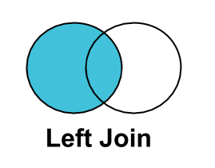
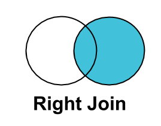
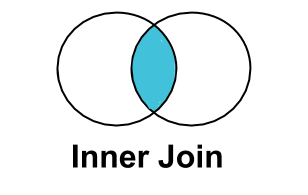
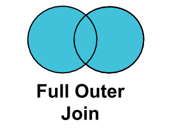

Merging Data with PROC SQL¶
PROC SQL is the most useful and versatile SAS procedure. When you use PROC SQL, SAS can leverage some of the efficiencies of SQL processing, which can improve the processing time of your queries. The flexibility and specificity of SAS SQL statements are often preferable to the SAS provided alternatives.
PROC SQL steps are generally of the form:
proc sql;
(create table NEW_TABLE as)
select VARIABLES
from SOURCES
(group by KEYS)
(order by KEYS)
(where);
quit;
The statements contained in parentheses are optional. When you write your PROC SQL statements, do not include the parentheses. If you omit the create table line, the result of you PROC SQL step will be written to the log but no data will be written to the disk. The optional group by and order by lines instruct SAS to collapse the data to a single row by the specified keys and sort the data by the specified keys, respectively.
Merging data in SAS using PROC SQL JOINS¶
Generally for our purposes, when we want to merge together two datasets in SAS we use JOIN commands in a PROC SQL step. All SQL joins are akin to many-to-many joins implemented by the joinby function in Stata — these joins are not on their face equivalent to 1:1, 1:m, or m:1 joins unless you ensure that the tables you are joining are unique on the join variables yourself.
Conceptually, SQL joins involve a “left” table and one or more “right” tables to be joined. All joins are Cartesian products made on the the specified merge key variables. This means if there are two duplicate matching keys in the left table and two duplicate matching keys in the right table, there will be four duplicate keys in the output dataset. Another way to phrase this is that each observation is assigned all of the rows that it matches to.
The most common join we use is the LEFT JOIN but all types are outlined below
LEFT JOIN¶

A LEFT JOIN selects all the obervations in the left table regardless of their key values but only selects observations with matching key values from the right table. Variables from the right table in rows where there is no match are assigned missing values. A LEFT JOIN is not commutative (i.e. reversing the order of the data sets can produce different results).
Example¶
In this example, we merge on state from out.kid_geos using a LEFT JOIN onto in.fake_micro and save the resulting dataset in out.left_join_example.
Here, we use the select statement to only keep certain variables from each dataset, labeled A or B. These labels are assignedbelow in the from and left join statements.
The merge key here is pik and we require that pik is not null for the left table (A).
proc sql;
create table out.fake_micro_with_geo as
select A.pik, A.mom_pik, A.dad_pik, B.state
from out.fake_micro as A
left join out.kid_geos as B
on A.pik = B.pik and A.pik is not null;
quit;
The output data set out.left_join_example is:
| pik | mom_pik | dad_pik | state | |
|---|---|---|---|---|
| 0 | 001 | NaN | 034 | 24.0 |
| 1 | 002 | NaN | 117 | 48.0 |
| 2 | 003 | 001 | NaN | 81.0 |
| 3 | 004 | NaN | 101 | 24.0 |
| 4 | 005 | NaN | 058 | NaN |
| 5 | 006 | 010 | NaN | NaN |
| 6 | 007 | 172 | NaN | 1.0 |
| 7 | 008 | NaN | 017 | 37.0 |
| 8 | 009 | NaN | 029 | 2.0 |
| 9 | 010 | NaN | 142 | 38.0 |
RIGHT JOIN¶

A RIGHT JOIN selects all the observations in the right table. When observations do not match to the left table the key values are set to missing. A RIGHT JOIN, like a LEFT JOIN, is not commutative and is not the same as reversing the datasets in a LEFT JOIN.
Example¶
In the example below, we have the same setup as in the LEFT JOIN example, except that we use a RIGHT JOIN.
Note: out.kid_geos is a subset of out.fake_micro so pik will never be missing in the output data set since all the keys in out.kid_geos appear in out.fake_micro.
proc sql;
create table out.fake_micro_with_geo as
select A.pik, A.mom_pik, A.dad_pik, B.state
from out.fake_micro as A
right join out.kid_geos as B
on A.pik = B.pik and B.pik is not null;
quit;
| pik | mom_pik | dad_pik | state | |
|---|---|---|---|---|
| 0 | 001 | NaN | 034 | 24.0 |
| 1 | 002 | NaN | 117 | 48.0 |
| 2 | 003 | 001 | NaN | 81.0 |
| 3 | 004 | NaN | 101 | 24.0 |
| 4 | 007 | 172 | NaN | 1.0 |
| 5 | 008 | NaN | 017 | 37.0 |
| 6 | 009 | NaN | 029 | 2.0 |
| 7 | 010 | NaN | 142 | 38.0 |
| 8 | 012 | NaN | 126 | 61.0 |
| 9 | 013 | NaN | 180 | 3.0 |
INNER JOIN¶

An INNER JOIN selects all the observations that have keys in both the left and the right data set.
An INNER JOIN is a logical AND between the two tables. Unlike a RIGHT JOIN or a LEFT JOIN, an INNER JOIN is commutative
so tables can be joined in either order.
Example¶
In the example below, we have the same setup as in the previous examples, except that we use an INNER JOIN.
proc sql;
create table out.fake_micro_with_geo as
select A.pik, A.mom_pik, A.dad_pik, B.state
from out.fake_micro as A
inner join out.kid_geos as B
on A.pik = B.pik and B.pik is not null;
quit;
| pik | mom_pik | dad_pik | state | |
|---|---|---|---|---|
| 0 | 138 | 149 | NaN | 2.0 |
| 1 | 177 | NaN | 003 | 87.0 |
| 2 | 146 | 013 | 004 | 71.0 |
| 3 | 104 | 187 | 005 | 21.0 |
| 4 | 083 | 025 | 007 | 13.0 |
| 5 | 115 | NaN | 008 | 28.0 |
| 6 | 170 | 157 | 009 | 65.0 |
| 7 | 051 | 058 | NaN | 35.0 |
| 8 | 054 | 034 | NaN | 99.0 |
| 9 | 111 | 004 | NaN | 2.0 |
FULL JOIN¶

A FULL JOIN selects all observations from both datasets and sets missing key values for observations that only appear in the right dataset.
A FULL JOIN is the logical OR between two datasets, but unlike an INNER JOIN it is not commutative because missing key values are
set based on the right dataset. We illustrate this below.
Example¶
In the example below, we have the same setup as in the previous examples, except that we use a FULL JOIN with out.kid_geos as the right dataset.
proc sql;
create table out.fake_micro_with_geo as
select A.pik, A.mom_pik, A.dad_pik, B.state
from out.fake_micro as A
inner join out.kid_geos as B
on A.pik = B.pik and B.pik is not null;
quit;
| pik | mom_pik | dad_pik | state | |
|---|---|---|---|---|
| 0 | 001 | NaN | 034 | 24.0 |
| 1 | 002 | NaN | 117 | 48.0 |
| 2 | 003 | 001 | NaN | 81.0 |
| 3 | 004 | NaN | 101 | 24.0 |
| 4 | 005 | NaN | 058 | NaN |
| 5 | 006 | 010 | NaN | NaN |
| 6 | 007 | 172 | NaN | 1.0 |
| 7 | 008 | NaN | 017 | 37.0 |
| 8 | 009 | NaN | 029 | 2.0 |
| 9 | 010 | NaN | 142 | 38.0 |
Reverse Example¶
Now lets reverse the datasets to illustrate why a FULL JOIN is not commutative.
proc sql;
create table out.full_join_example as
select A.pik, A.state, B.mom_pik, B.dad_pik
from out.kid_geos as A
full join out.fake_micro as B
on A.pik = B.pik and A.pik is not null;
quit;
| pik | state | mom_pik | dad_pik | |
|---|---|---|---|---|
| 0 | 001 | 24.0 | NaN | 034 |
| 1 | 002 | 48.0 | NaN | 117 |
| 2 | 003 | 81.0 | 001 | NaN |
| 3 | 004 | 24.0 | NaN | 101 |
| 4 | NaN | NaN | NaN | 058 |
| 5 | NaN | NaN | 010 | NaN |
| 6 | 007 | 1.0 | 172 | NaN |
| 7 | 008 | 37.0 | NaN | 017 |
| 8 | 009 | 2.0 | NaN | 029 |
| 9 | 010 | 38.0 | NaN | 142 |